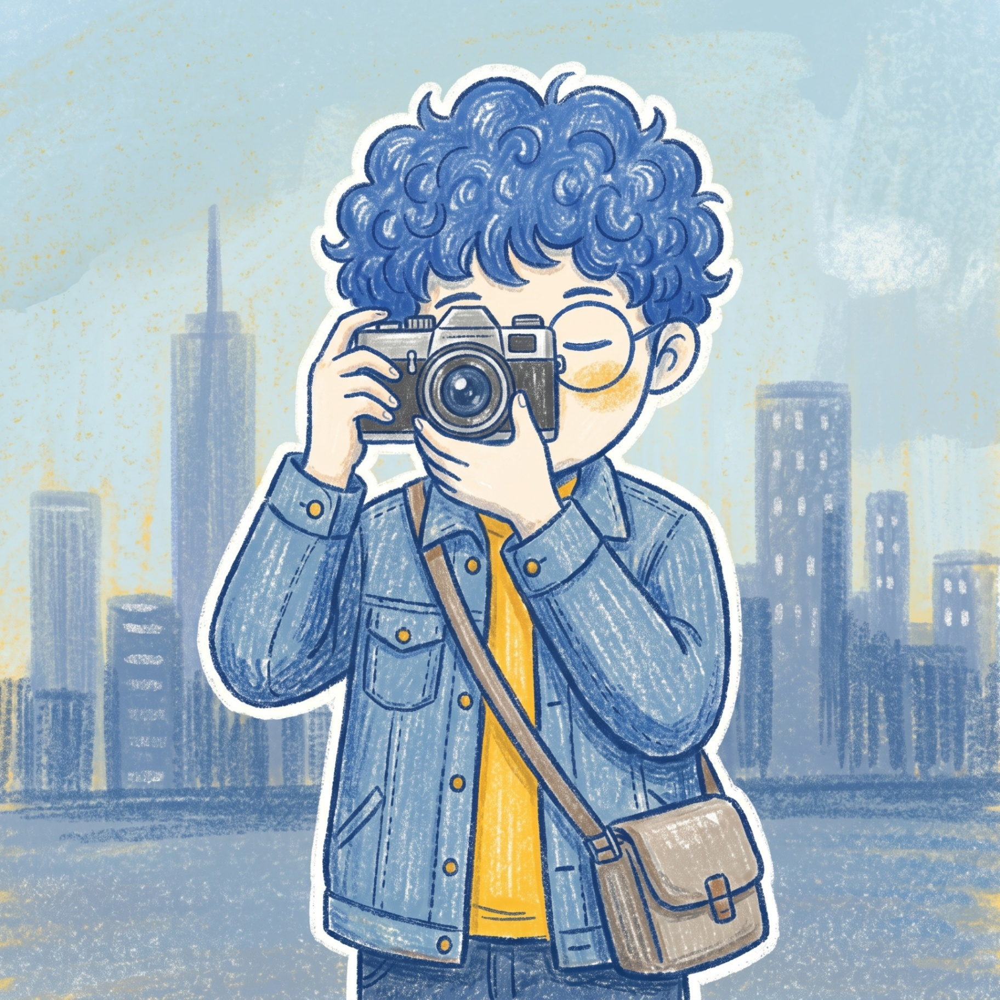

Scroll

关于我
我做的东西，会呼吸。
31 岁，坐标深圳，全栈工程师。我专注于构建兼具技术严谨与工艺美感的 Web 应用——每一个像素、每一帧动画、每一次 API 响应，都应该是有意为之。
过去六年，我在金融科技、电商和创意工具领域交付了多个产品。我关心性能、可访问性，以及那些区分「能用」和「好用」的微小细节。
不写代码的时候，大概在画 UI 草图、折腾 WebGL，或者手冲一杯咖啡。
- 工作经验
- 6+年
- 交付项目
- 40+
- 每日咖啡
- 3杯
技能
我能带来什么。
前端工程
像素级精准的界面实现，精通性能优化、动画系统与无障碍访问。用现代框架构建流畅的用户体验。
后端与系统
可扩展的 API、微服务架构与数据管道。我设计能扛住真实流量的系统，从容不迫。
DevOps & 云
CI/CD 流水线、容器编排与基础设施即代码。快速、可靠地交付。
设计 & UX
连接设计与工程的桥梁。用系统思维思考，用代码原型验证，执着于交互之间的每一个瞬间。
精选作品
项目展示。
精选
Lo-fi · 独立企划
Z世代Lo-fi心路创作
一粒尘埃里装得下整个时代。从地铁末班车的一次呼吸开始，四个视角，同一件事，一首 Lo-fi。
查看作品正在酝酿
一些有趣的东西
敬请
期待